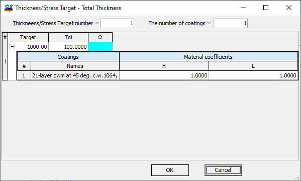
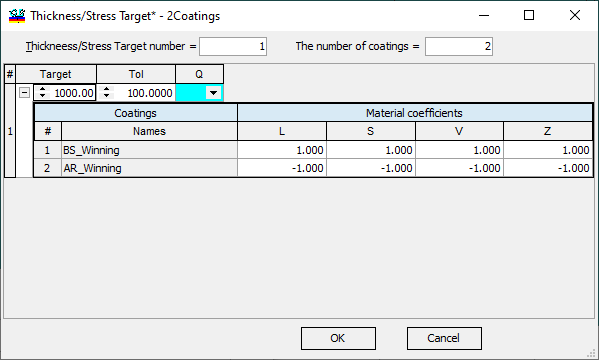
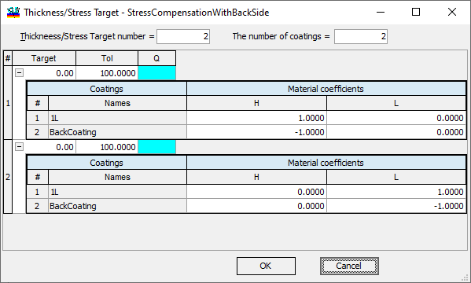

Thickness/Stress Target
Thickness/Stress Target
The Thickness/Stress targets enable users to define the desired total thickness of the coating or the total thicknesses for each material type. These requirements can be expressed in a broad manner, represented as a linear combination of the total thicknesses of each coating material (SThabbr) with Material coefficients Cij of arbitrary values.
C1H SThH + C1L SThL + … = Tg1 ,
C2H SThH + C2L SThL + … = Tg2 ,
… … … …
The familiar Stoney formula, which relates surface deflection to layer thicknesses, Young’s modulus, Poisson’s ratio of the materials, and stresses in the layer materials, can be conveniently reformulated in the mentioned format. For a practical demonstration, you can refer to Example 44.
As is customary, a merit function linked to stresses is introduced in the context of this formulation:
MF2stress = wstress [(Tg1 - S1)2 + (Tg2 - S2)2 + … ] ,
represent the desired targets for each of the linear combinations. It is also possible to create asymmetrical target expressions using Qualifiers A, B, and range targets (Qualifier R).
The most basic Thickness/Stress target can be automatically generated by utilizing the “New” button in the Thickness/Stress Database.

In this case, only one target expression is specified in the Thickness/Stress Target number entry field. The default number of coatings is set to 1. For the specified target value of 1000, in this example, it is in nanometers based on the current Length Units. The Tolerance value is also given as 100 nanometers. All Material coefficients are set at 1.00, making the linear combination straightforward as the total physical thickness of the coating. It is important to note that more complex requirements can be formulated using the Stoney formula and the mechanical properties of layer materials. In situations where Back Design is used or a Stack object is loaded in memory, it is possible to create Thickness/Stress Targets for multiple coatings. By adjusting the number of coatings entry field to 2, you will receive the default Thickness/Stress Target in the specified form.

When additional coatings are known and loaded into memory, their names will appear in the “Names” column. By default, the coefficients for the second coatings are set to -1.00, not +1.00. This negates the contribution of the second coating to stresses, following a common stress compensation technique where a similar coating is deposited on the backside of the substrate, effectively balancing stresses and minimizing substrate deflection. This technique is advantageous as it does not necessitate detailed knowledge of material mechanical properties. For a more reliable stress target that prevents potential imbalances in layer materials content in the forward and back coatings, the following approach is recommended:

In this scenario, two requirements are being specified:
The total thickness of the material H should be as close as possible to 0.0,
The total thickness of the material L should be as close as possible to 0.0.
For a more in-depth understanding of Thickness/Stress Targets, we recommend referring to Example 44 for further discussion.